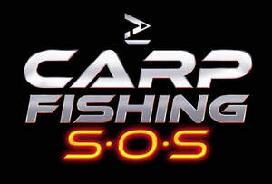

Trade Mark Journal No.2025/041 10 October 2025
UK00004269998 26 September 2025 (9,28,41)
Mark 1
Mark 2

Mark 3
- Class 9
- Recorded films; animated cartoons; intelligent gateways for communication; mobile apps; recorded content; recorded media; media content; computer software; computer software applications; computer software platforms; video game programmes; video game software; audio and audio-visual recordings; pre-recorded videos; electronic publications; podcasts; downloadable publications; e-books; downloadable digital images and assets; downloadable image files; parts and fittings for the aforesaid goods.
- Class 28
- Sporting articles and equipment; fishing equipment; fishing tackle; fishing lines; floats for fishing; gut for fishing; reels for fishing; fish hooks; artificial fishing bait; rods for fishing; holders for fishing rods; fishing tackle boxes; fishing rod cases; landing nets for anglers; fishing tackle bags; toys, games and playthings; parts and fittings for the aforesaid goods.
- Class 41
- Entertainment; video, audio, audio-visual, film, podcast, webinar and documentary production; creating and production of animated cartoons; provision of entertainment via podcast; creation (writing) of podcasts; writing of texts; publishing; sporting and cultural activities; education; arranging and conducting conferences, seminars, exhibitions, awards and competitions; arranging and hosting of entertainment, sporting, cultural and educational events; consultancy, information and advisory services relating to all the aforesaid services.
Nocturnal Flow Ltd.